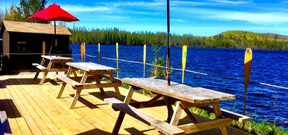
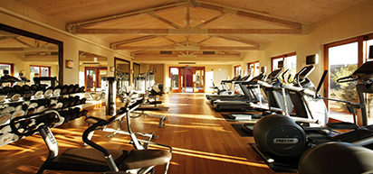
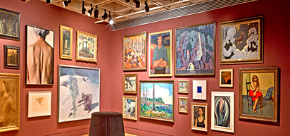

About & Facilities
Ontario's Couples Resort is on the shores of Algonquin Park's Galeairy Lake, which mostly is in
Algonquin
Park and the Madawaska River. The village of Whitney, Ontario is a short 15-minute walk away. Algonquin
Park being our backyard, we are surrounded with breathtaking wilderness, pure fresh air, secluded
forests,
pristine waters, an abundance of sunny days, and a blanket of stars at night.
A 5-STAR Luxury Resort for Couples
A 5-STAR Luxury Resort for 46 couples. Endless Nature and Sports Activities, together with Pampering Spa
Treatments and followed by Decadent Gourmet dining by our International Chefs.
Those of you who need to escape from the bustle will find us calming and rejuvenating. There are many
ways
to do
nothing if that is your wish. On the other hand, unlimited activities will keep the adventurer active
all
year
round. Ontario's Natural Algonquin Park is ideal for the sport enthusiast or avid adventurer who will be
delighted with the extraordinary activities available.
"Thank you for your interest in our Couples Resort. Here you will find the time to spend quality time
together,
and this is why we exist, to be here, so that you can spend lots of time together. We, the Sorensen
Family,
started in 1967 to take care of guests, in 1989 we moved to couples only (no kids and no
meetings/conferences)
as we knew that many couples needed special time together. In 2006, Canada Select which was rating 4000
accommodation properties in Canada, decided we should join them because we were easily in the top 1%, a
5
Star,
and we are glad we made it for you to enjoy as you deserve it. Now, many times of the year, we offer
rates
super discounted as we wish to be accessible to as many couples as possible, as all couples should
benefit
from
quiet time together. We have learned over the decades from our guests that those guests that have a love
for
gratitude for each other and for their surroundings are the happiest people, daily I ask how grateful am
I,
and
I hope you are filled with many things that you are grateful for. If you know other couples who need
time
away
please pass on the word."
2018, IceHiking invented by John Sorensen, 50 years after Father, Fritz Sorensen opened up Cross Country
Skiing
in Algonquin Park, now get out and go and enjoy Nature!
Your Hosts, The Sorensen Family & Team The Couples Resort, Ontario - Canada
FYI * #1 Romantic Resort in Ontario. Defined by when we were paying TripAdvisor over $10,000 a year to
belong
to them they rated us #1 in Ontario. The moment we stopped paying them the annual fee we were completely
dropped
from their list. We refuse to have TripAdvisor use Extortion on us to belong to their listings. Yet
TripAdvisor
continues to still publish the reviews, and this is ethically just wrong as they are using their Power
to
Punish
us and this is Blackmail. Hope you agree with us.

Facilities
Lakeside Patio & Pool
- - 1 Patio Area; Over looking Galeairy Lake
- - Alcohol Licenced by the LLBO - non-smoking area
- - Wrought iron patio tables & chairs
- - Meals / Snacks / Drinks - purchased from patio servers
Self - Service Patios(bring your own refreshments)
- 3 Patio Areas - Over looking Galeairy Lake
- Double fire-pit patio Smoking Allowed
- Pool patio NO GLASS ALLOWED Non smoking
- Couples Chaise lounges Patio's Non smoking
Pool
Outdoor salt-water pool 20 feet X 40 feet. Open May Long Weekend until Labour Day Weekend. Pool Temp
82'F &
28'C
hours 10am to 7pm.
Gift Shop & Rec Room
Visit our gift shop for snacks, souvenirs, and more, or enjoy recreational activities in our rec
room, equipped with:
- - 3 slate billiard tables
- - 1 ping pong table
- - 1 foosball table
- - 1 shuffleboard table
- - 2 dart boards
- - 2 seating areas

Gym & Sports Center
Gym
- - 1 concept 2 rowing machine
- - 1 variable stationary bike
- - 1 tread master
- - free weights
- - mats, TV/VCR, water cooler
- - sauna
- - change rooms and showers
- - on-site washer and dryer
Sports Center
- We have all the necessary equipment to enjoy the outdoors in spring, summer, winter or fall.
- We have extensive collection of all weather clothing, outerwear, footwear, hats and accessories
&
apparel.
- Motor boats, Paddle boats & Row boats, Kayaks & Canoes.
- Pickleball & Tennis & Badminton & Basket Ball courts and equipment.
- Most equipment is free for details check out Packages Page

Artist's Gallery & Museum
Gertrud Sorensen - Artist
Gertrud Sorensen is an Austrian-born Canadian. After a successful business career with Danish husband
Fritz,
at The Bear Trail Couples Resort, she became our resident artist. Gertrud presently operates an
extensive
art studio with over 30 paintings in her gallery. https://www.gertrudsorensen.com
The four Algonquin seasons are portrayed with varying moods in vibrant colours on her canvases.
Having
learned from Poul Thrane, David Armstrong, Gladys Ewing, Mary Lampman and Ron Leonard, it is easy to
appreciate how they and the nature of Algonquin Park have influenced Gertrud's art.
Visit Gertrud's on-site studio while you are here and enjoy her artwork. Wander in and watch a
canvas come
to life. Take home a special gift to remember a romantic honeymoon or a joyous occasion as many of
our
guests from around the world have done.
Contact Gertrud SorensenEmail: gertrudsorensen@couplesresort.ca
Museum
Take a historical photo journey in one of the first cabins built on the property when it was known as
the
Bear Trail Inn to the present day Couples Resort.
The resort has enjoyed a long and memorable history since 1967, when the Sorensen family purchased
the
property.
The Couples Resort will be an experience that you look back on with many memories. It is these
memories that
keep guests returning.